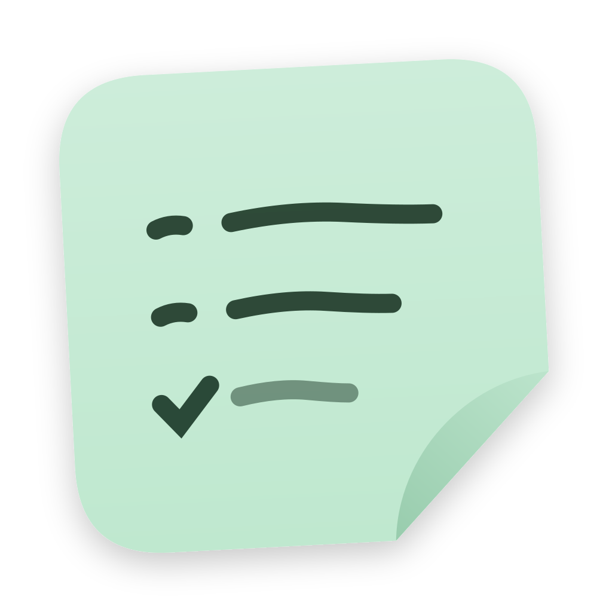
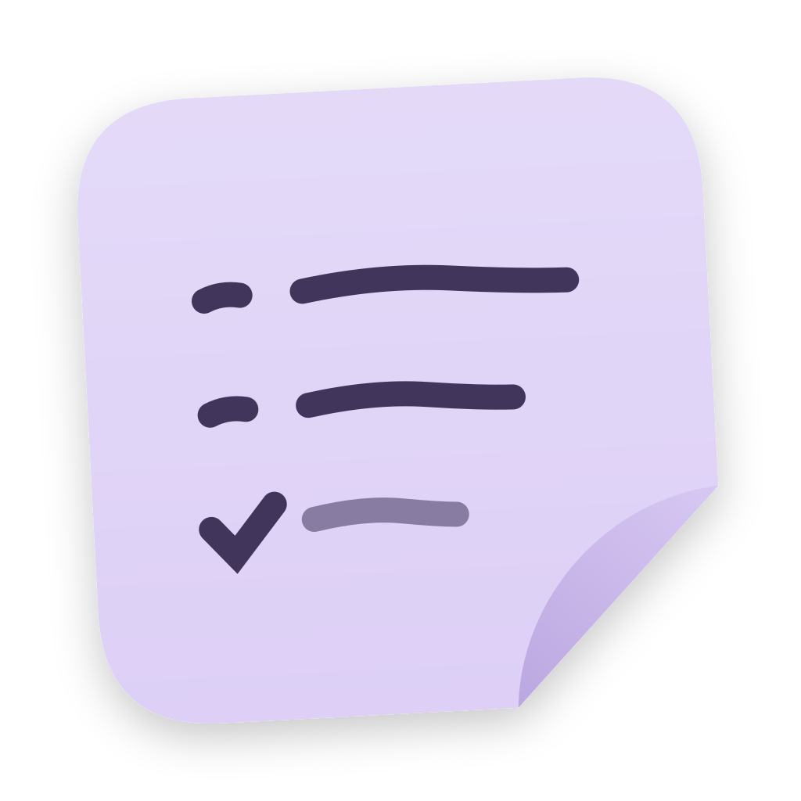
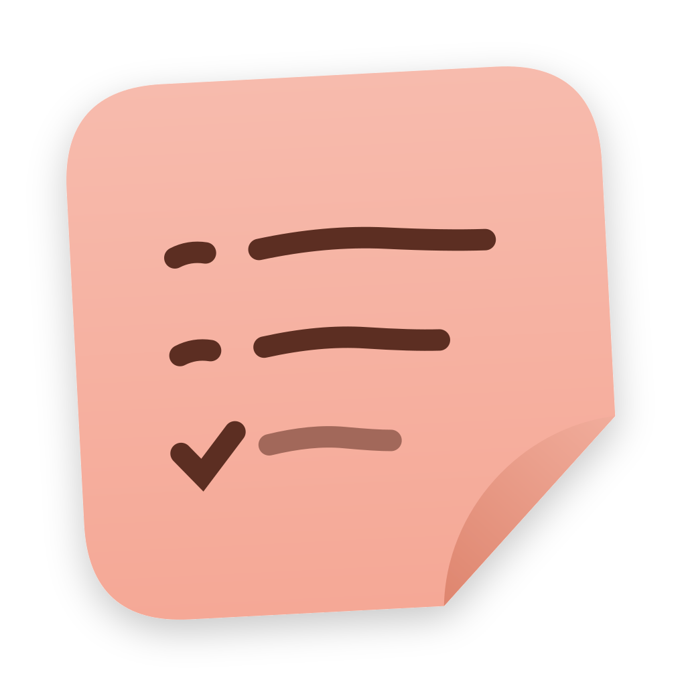
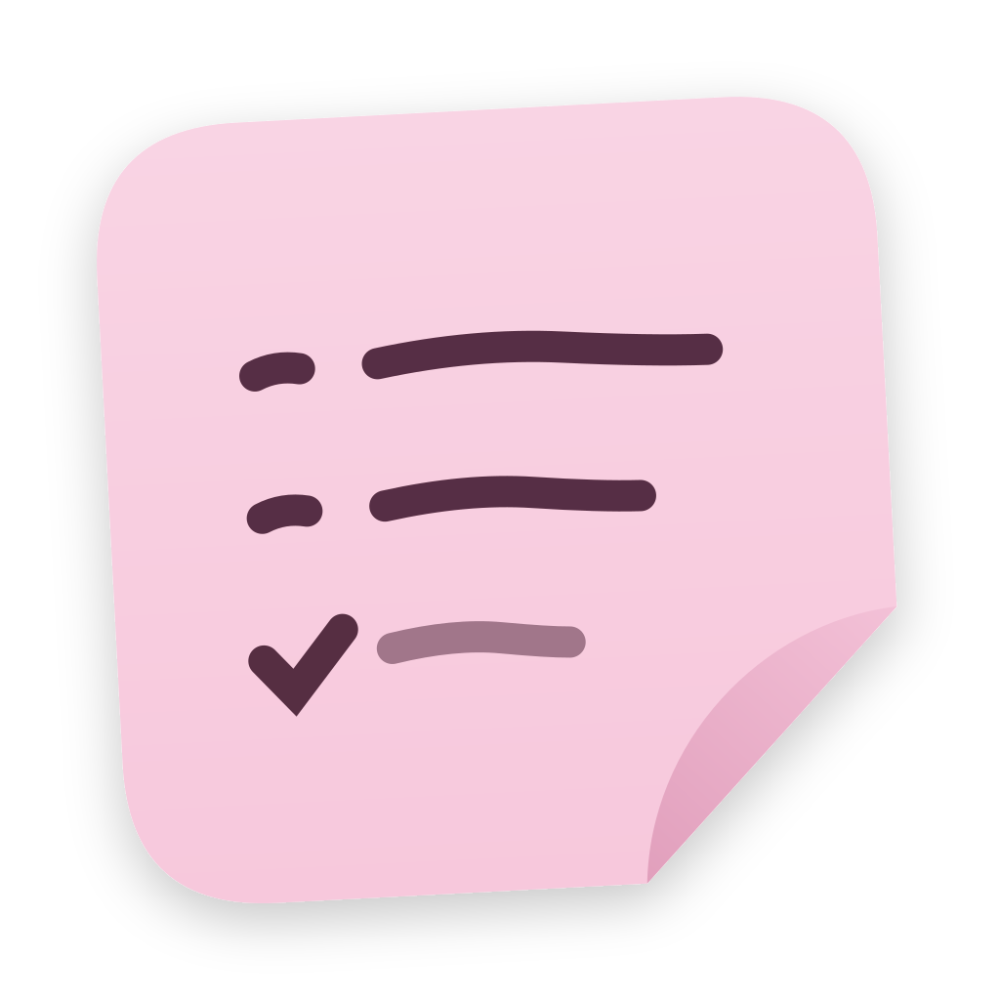
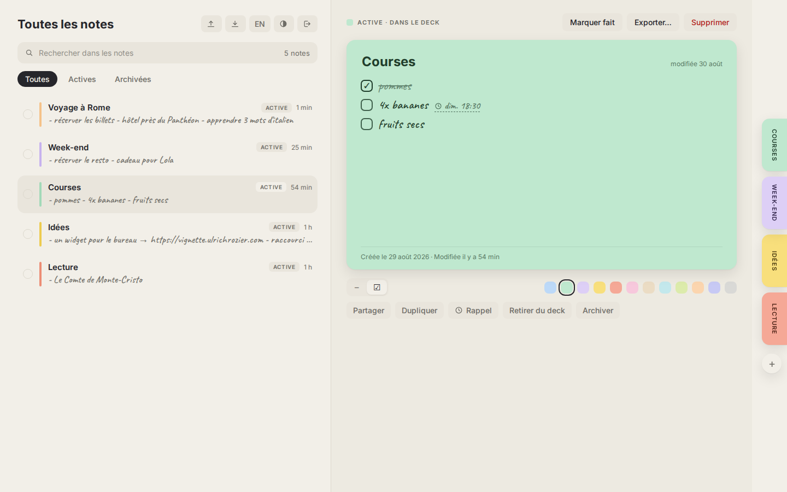
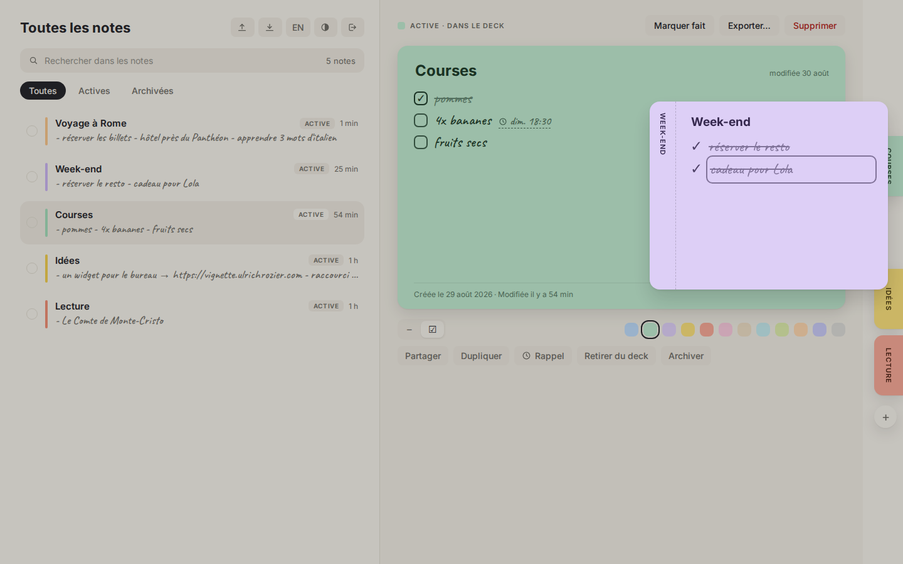
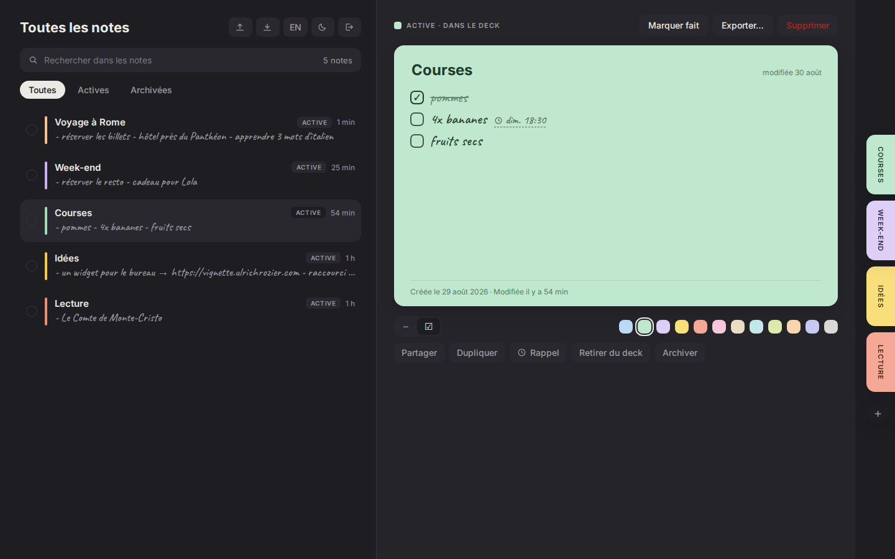
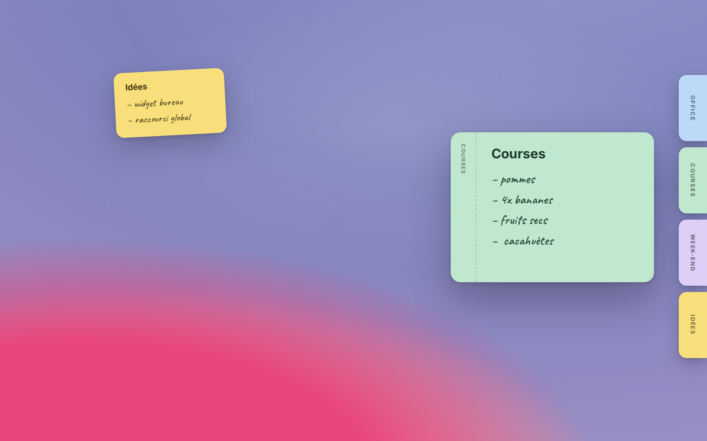
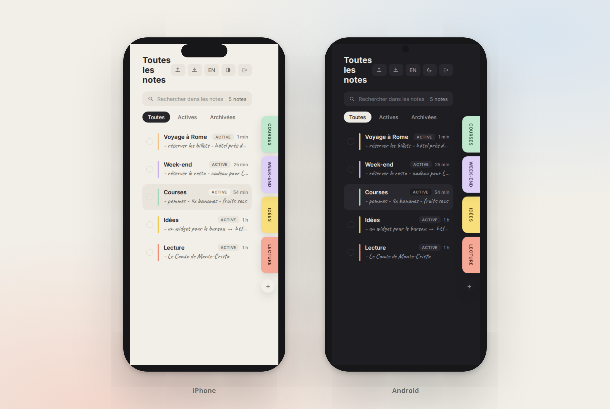

— l'icône
Sept couleurs, un seul geste.
Le coin qui se décolle, la liste manuscrite, la coche du travail fait.




Vignette transforme tes listes de choses à faire en post-its qui vivent dockés au bord de l'écran, se déplient d'une pichenette, se synchronisent en temps réel et se partagent avec les gens que tu aimes.

— promesses tenues
Tout ce qu'un post-it fait sur ton frigo, en mieux, partout.
Tes notes vivent en onglets pastel sur le bord de l'écran et se déplient d'une pichenette, avec de vraies animations à ressort.
Coche un item sur ton téléphone, il se barre instantanément sur ton Mac. Aucun bouton « rafraîchir » n'a survécu à ce projet.
Invite qui tu veux sur une note, en lecture ou en édition. L'invitation arrive comme un petit post-it jaune, à accepter ou refuser.
Tes données vivent sur ton serveur, dans un Postgres que tu contrôles. Un docker compose, et c'est chez toi.
Interface en français par défaut, bascule anglais en un clic, et un mode sombre où les post-its restent des post-its.
Markdown ou texte brut en un clic, corbeille restaurable, duplication, archivage. Tes listes ne sont jamais prisonnières.
— sous toutes les coutures
L'écriture est manuscrite, le papier est pastel, les animations sont physiques. C'est une app qu'on a envie de toucher.


— bientôt partout
Une seule base de code (web, Tauri) pour macOS, Windows, Linux, iOS et Android — avec les post-its posés directement sur le bureau.


— l'icône
Le coin qui se décolle, la liste manuscrite, la coche du travail fait.




— pas à pas
De la première note au serveur chez toi, tout est documenté dans le dépôt.
Créer un compte, écrire une première note, la docker au bord de l'écran et la marquer faite.
02.Un docker compose, un script de secrets, deux migrations : Vignette tourne sur ta machine, données comprises.
03.Inviter par email, choisir lecture ou édition, accepter une invitation et collaborer en temps réel.